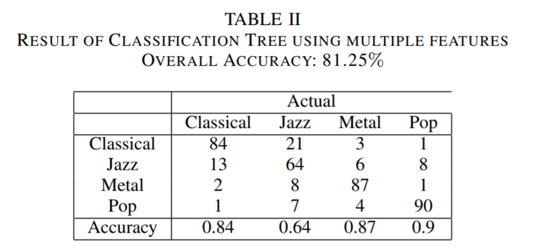
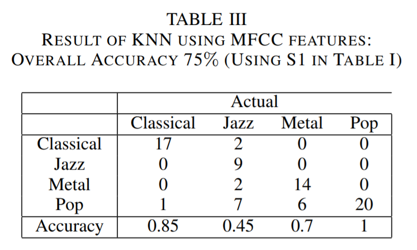
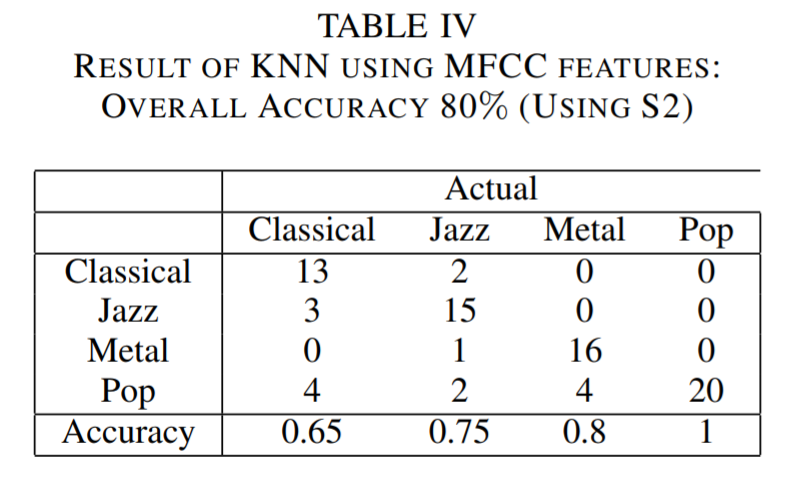
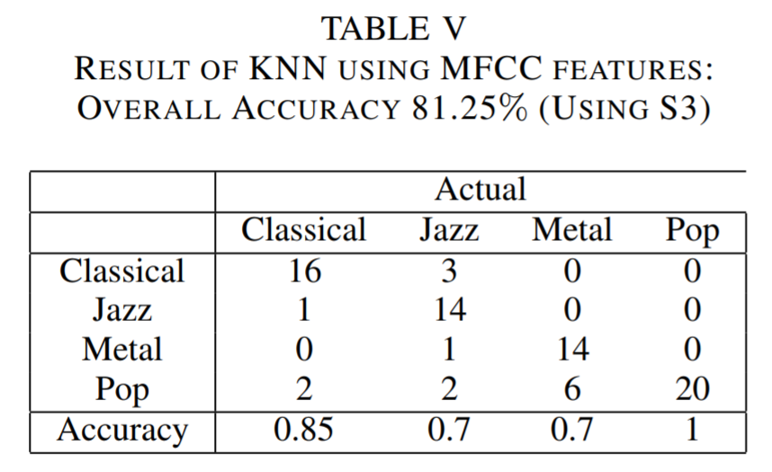

Result
As we talk about in the introduction part, we propose two architectures for music genre classification - Combination of different level audio features with decision tree model and MFCC with KNN and K-means clustering. Besides that, we also try the improved decision tree model - random forest model combined with different level audio features. Results are shown below.
Decision Tree

Decision tree learning is a method commonly used in data mining. The goal is to create a model that predicts the value of a target variable based on several input variables. We used decision tree to classify the music genres. The correctness evaluated by K-fold cross validation is 81.25%.
In our decision tree model, there are 16 predictors, and the tree demonstration is shown in Figure 4. The predictors are shown as \(x1\) to \(x16\). Among the predictors, \(x1\) represents spectral centroid, \(x2\) represents zero crossing rate, \(x3\) represents short time energy, \(x4\) to \(x11\) represent spectral flux coefficients, and \(x12\) to \(x16\) represent LPC coefficients.
The upper splits show greater significance. For example, LPC coefficients, spectral centroid and short time energy play important roles in this model.
Classification tree shows decent results on classifying classical, metal and pop music, but it fails on the jazz music. The main reason is that there isn't any good predictor which could separate classical and jazz music perfectly.
Random Forest
To improve the performance, we adopted random forest, which is an ensemble method based on decision tree.
We used TreeBagger function in Matlab, and we used the same predictors as decision tree. Because of maximum voting, it shows a better result than decision tree. When the tree size is 50, the out-of-bag error is 0.1325, which means the accuracy is 86.75%. The plot of number of trees vs. oob error is shown below.

KNN
  As mentioned above, the distance used in our KNN method is defined as a symmetric form using Kullback Leibler divergence (KLD). Besides, we have also tried taking mean of MFCC matrix of each song and calculating euclidean distance based on means to convert MFCC coefficients into distances. However, we found that this doesn't make much sense because it won't indicate the pattern of a specific genre in varying MFCC coefficients through windows as a whole. Also, we thought about K-means clustering, but we found it is better for unsupervised learning, which does not fit into our scenario. On the contrary, modeling MFCC matrix using multivariate Gaussian distribution seems to be more suitable.
In our KNN methods, we used 3 different sets of MFCC parameters. They are mainly adjustment about MFCC window size and frequency range. The table for each setting has been shown above.
It is critical to determine the hyper parameter \(k\) for our K nearest neighbor. We choose \(k=18\) because our training data set has a size of 320 and \(\sqrt{320} = 17.9 \approx 18\). According to the literatures, setting k as square root of size of training set is robust to noise with a reasonable computational cost. We have tested other k values other than \(k=18\), for example, \(k=8\) or \(k=40\). However, those settings end up underfitting or overfitting. Table 3 to 5 is constructed under \(k=18\).
At first, we have no idea of which set of values is best for classifying music genre. We used the suggested values and it turned out that the above 3 settings are those can indicate a typical trend of how tuning parameters will influence genre classification accuracy. The results shows that the larger the window size, the better the performance of our result. This is consistent with the fact that for music genre detection, rather than speech detection, a small window length will only corresponds to a local feature that does not have much meaning.